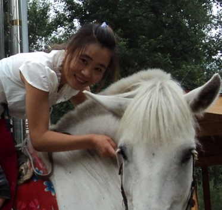

Chunmei Xia
MSc student · Jinan University
I am currently a MSc student at Jinan University. My research mainly focuses on ... I also serve as a volunteer Chinese teacher at the Chinses School Delft, where I teach ...
Delft, Netherlands
News
- Aug. 2026: We ...
- Jul. 2025: I have started my MSc program at Jinan University.
- Jan. 2020: I joined CSC Deflt as a volunteer Chinese teacher.
Teaching
- Fall 20xx: Chinese
- Spring 20xx: Chinese
Research
Publications
2018 |
|
|
Reproduction in Domestic Animals, 53(1), 11-19, 2018. |
|
2012 |
|
|
Effect of antioxidant supplementation on function and fertility of sex-sorted boar spermatozoa Animal Reproduction Science, 136(1-2), 108-114, 2012. |
|
2008 |
|
|
European Polymer Journal, 44(10), 3300-3305, 2008. |
|
Education and Experience
- 2020 - now: Volunteer teacher, SCS Delft
- 2025 - now: Master, Jinan University
- 2015 - 2017: Lab assistant, KAUST
- 20xx - 20xx: Master, Jilin Agriculture University
- 20xx - 20xx: Bachelor, Jilin Agriculture University